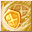
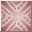

Loading...
Items
Armas
Espada
Maza
Hacha
Espada dos manos
Maza dos manos
Hacha dos manos
Arco
Arma de Fuego
Reliquia
Bastón
Escudo
Arma mec. 1 mano
Arma mec. 2 manos
Cañon Pesado
Flechas
Balas de cañon
Llave de Cristal
Katana
Armadura
Cabeza
Cuerpo
Piernas
Manos
Piernas
Dorso
Accesorio
Mochila
Equipo Especial
Equipo 1 mano
Equipo 2 manos
Equipo Cabeza
Equipo Espalda
Cuerpo
Articulos de Talento
Talentos
Planos
Fragmentos
Skills
Piedras Mega
Sprite
Sprite
Monstruo Embotellado
Mochila
Formula Isla Sprite
Cria Isla Sprite
Receta Isla Sprite
Edificio Isla Sprite
Legados
Muebles Sprite
Emblema Sprite
Skill Book(Novice)
Skill Book(Intermediate)
Skill Book(Advanced)
Materiales
Mineria
Forraje
Caza
Materiales de equipo
Piedras de Equipo
Gema Prismatica
Piedra Runa
Piedra de Resonancia
Nucleos
Monturas
Tronos
Comb Talentos
Berserker
Paladin
Ranger
Asesino
Clerigo
Sabio
Mago
Nigromante
Artificiero
Artillero
Duelista
Relojero
Quest
Titulos
Skills
Berserker
Paladin
Ranger
Asesino
Clerigo
Sabio
Mago
Nigromante
Artificiero
Artillero
Duelista
Relojero
Sprites
Spanish
English
Español
Portuguese
French
Sugerencias
Contáctenos
Creditos
Haz Alquimia
F.A.Q
Hora
00
:
00
:
00
Horario Emisarios
<Avatar del Emisario> Heraldo de la Lujuria
Bosque Antiguo (X:290, Y:370) Lunes 20:35
<Emisario del Juicio Final Lunático> Locura de Lujuria
Valle de Caballeros (X:510.53, Y:619.852) Lunes 20:35
<Emisario Pesadilla> Voraz Ladona
Club de Lucha del Rey Sprite (X:134.088, Y:347.754) Lunes 15:30
<Emisario Antiguo> Justicia
Valle del Espíritu (X:439.138, Y:559.115) Lunes 20:30
<Emisario de Ilusión> Yen Alfa
Aldea Aura Ficticia (X:639.151, Y:232.943) Lunes 15:30
<Emisario de Ilusión> Zhong Iota
Sendero Llamafría (X:534.548, Y:578.733) Lunes 20:30
Skills Paladin
Skills
Skills Pasivos
Nombre
Nivel
Efecto
Oleada de Ira 1
Skills
×
Oleada de Ira 1
Oleada de Ira 2
Oleada de Ira 3
Oleada de Ira 4
Gran Ola Sangrienta 1
Gran Ola Sangrienta 2
Oleada de Ira Máxima 1
Entusiasmo Extremo 2
6
Info
Golpe Rompecielos 1
Skills
×
Golpe Rompecielos 1
Golpe Rompecielos 2
Golpe Rompecielos 3
Golpe Rompecielos 4
Golpe Rompecielos 5
Golpe Rompecielos 6
Golpe Súper Rompe-Cielo 1
Golpe Súper Rompe-Cielo 2
Asalto Rompecielos 1
Asalto Rompecielos 2
6
Info
Corte de Torbellino 1
Skills
×
Corte de Torbellino 1
Corte de Torbellino 2
Corte de Torbellino 3
Corte de Torbellino 4
Corte de Torbellino 5
Corte de Torbellino 6
Tormenta Tajante 1
Tormenta Tajante 2
Corte de Tormenta 1
Corte de Tormenta 2
6
Info
Golpe Debilitante 1
Skills
×
Golpe Debilitante 1
Golpe Debilitante 2
Golpe Debilitante 3
Golpe Debilitante 4
Golpe Debilitante 5
Golpe Reductor 1
Golpe Reductor 2
Asalto de Conmoción 1
Asalto de Conmoción 2
8
Info
Onda Terrestre 1
Skills
×
Onda Terrestre 1
Onda Terrestre 2
Onda Terrestre 3
Onda Terrestre 4
Ola Agrieta-Tierra 1
Ola Agrieta-Tierra 2
Parte Tierra 1
Parte Tierra 2
16
Info
Escudo Golpeador 1
Skills
×
Escudo Golpeador 1
Escudo Golpeador 2
Escudo Golpeador 3
Golpe Escudo Masivo 1
Golpe Escudo Masivo 2
Destruye-Escudos Poderosos 1
Destruye-Escudos Poderosos 2
16
Info

Golpe de Escudo 1
Skills
×
Golpe de Escudo 1
Golpe de Escudo 2
Golpe de Escudo 3
Golpe de Escudo 4
31
Info
Granada de Luz Divina 1
Skills
×
Granada de Luz Divina 1
Granada de Luz Divina 2
Granada de Luz Divina 3
Granada de Luz Divina 4
Granada de Luz Divina 5
Granada de Luz Divina 6
Granada de Luz Divina 7
Granada de Luz Divina 8
Granada de Luz Divina 9
Granada de Luz Sagrada 1
Granada de Luz Sagrada 2
Granada de Luz Sagrada 3
Granada de Luz Sagrada 4
Granada de Luz Sagrada 5
Bala Trazadora Santa 1
Bala Trazadora Santa 2
Bala Trazadora Santa 3
Bala Trazadora Santa 4
31
Info
Luz Curativa 1
Skills
×
Luz Curativa 1
Luz Curativa 2
Luz Curativa 3
Luz Curativa 4
Luz Curativa 5
Luz Curativa 6
Luz Curativa 7
Luz Curativa 8
Luz Curativa 9
Aura Sanadora 1
Aura Sanadora 2
Aura Sanadora 3
Aura Sanadora 4
Aura Sanadora 5
Aura Sanadora Sacra 1
Aura Sanadora Sacra 2
Aura Sanadora Sacra 3
31
Info
Golpe de Justicia 1
Skills
×
Golpe de Justicia 1
Golpe de Justicia 2
Golpe de Justicia 3
Golpe de Justicia 4
Golpe de Justicia 5
Golpe de Justicia 6
Golpe de Justicia 7
Golpe de Justicia 8
Golpe de Justicia 9
Golpe de la Verdad 1
Golpe de la Verdad 2
Golpe de la Verdad 3
Golpe de la Verdad 4
Golpe de la Verdad 5
Asalto de Verdad 1
Asalto de Verdad 2
Verdad Relativa 1
Verdad Relativa 2
31
Info
Bandera de Enfrentamiento 1
Skills
×
Bandera de Enfrentamiento 1
Bandera de Enfrentamiento 2
Bandera de Enfrentamiento 3
Bandera de Enfrentamiento 4
Bandera de Enfrentamiento 5
Grito de Batalla Final 1
Grito de Batalla Final 2
31
Info
Defensa Perfecta 1
Skills
×
Defensa Perfecta 1
Defensa Perfecta 2
Defensa Perfecta 3
Defensa Perfecta 4
Defensa Perfecta 5
Defensa Absoluta 1
Defensa Absoluta 2
Defensa Absoluta Real 1
Defensa Absoluta 2
31
Info
Borde de la Rectitud 1
Skills
×
Borde de la Rectitud 1
Borde de la Rectitud 2
Borde de la Rectitud 3
Borde de la Rectitud 4
Borde de la Rectitud 5
Borde de la Rectitud 6
Borde de la Rectitud 7
Borde de la Rectitud 8
Borde de la Rectitud 9
Cuchilla Sacra 1
Cuchilla Sacra 2
Cuchilla Sacra 3
Cuchilla Sacra 4
Cuchilla Sacra 5
Filo Intenso de Santo 1
Filo Intenso de Santo 2
Filo Intenso de Santo 3
Filo Intenso de Santo 4
32
Info
Aura Curativa 1
Skills
×
Aura Curativa 1
Aura Curativa 2
Aura Curativa 3
Aura Curativa 4
Aura Curativa 5
Aura Curativa 6
Aura Curativa 7
Aura Curativa 8
Aura Curativa 9
Sanación Veloz 1
Sanación Veloz 2
Sanación Veloz 3
32
Info
Destruye-Escudos Poderosos 1
Skills
×
Destruye-Escudos Poderosos 1
Destruye-Escudos Poderosos 2
Destruye-Escudos Poderosos 3
Destruye-Escudos Poderosos 4
Escudo Agresor 1
Escudo Agresor 2
Escudo Golpeador Invencible 1
Escudo Golpeador Invencible 2
34
Info
Cura de la Plaga
Skills
×
Cura de la Plaga
36
Info
Escudo de Espinas 1
Skills
×
Escudo de Espinas 1
Escudo de Espinas 2
Escudo de Espinas 3
Escudo de Espinas 4
Escudo de Venganza 1
Escudo Vengativo 1
36
Info
Golpe Rompe-Armadura 1
Skills
×
Golpe Rompe-Armadura 1
Golpe Rompe-Armadura 2
Golpe Rompe-Armadura 3
Golpe Rompe-Armadura 4
Golpe Rompe-Armadura 5
Ataque Rompe-Armadura 1
Ataque Rompe-Armadura 2
Ataque Rompe-Armadura 3
Flash de Caparazón Perforante 1
Flash de Caparazón Perforante 2
Flash de Caparazón Perforante 3
38
Info
Esplendor Eterno 1
Skills
×
Esplendor Eterno 1
Esplendor Eterno 2
Esplendor Eterno 3
Esplendor Eterno 4
Esplendor Eterno 5
Llama Eterna 1
Llama Eterna 2
Súper Llama Eterna1
Súper Llama Eterna 2
40
Info
Ala Luz Veloz 1
Skills
×
Ala Luz Veloz 1
Ala Luz Veloz 2
Ala Luz Veloz 3
61
Info
Golpe Sacro 1
Skills
×
Golpe Sacro 1
Golpe Sacro 2
Golpe Sacro 3
Golpe Sacro 4
Golpe Sacro 5
Golpe Sacro 6
Golpe Sacro 7
Destrozo Sagrado1
Destrozo Sagrado 2
Destrozo Sagrado 3
Destrozo Sagrado 4
61
Info
Posible Libertad
Skills
×
Posible Libertad
66
Info
Escapó Sin Dejar Rastro
Skills
×
Escapó Sin Dejar Rastro
66
Info
El Cielo en la Tierra
Skills
×
El Cielo en la Tierra
66
Info
Protección de Luz Divina 1
Skills
×
Protección de Luz Divina 1
Protección de Luz Divina 2
Protección de Luz Divina 3
Protección de Luz Divina 4
Protección de Luz Divina 5
Protección de Luz Sacra 6
67
Info
Contra Ataque Sagrado 1
Skills
×
Contra Ataque Sagrado 1
Contra Ataque Sagrado 2
Contra Ataque Sagrado 3
Contra Ataque Sagrado 4
Contra Ataque Sagrado 5
Contra Ataque Sagrado 6
Contra Ataque Sagrado 7
Contra Ataque Sagrado 8
Contra Ataque Sagrado 9
68
Info
Imperio de Luz Divina 1
Skills
×
Imperio de Luz Divina 1
Imperio de Luz Divina 2
Imperio de Luz Divina 3
Imperio de Luz Divina 4
Imperio de Luz Divina 5
69
Info
Energía Sagrada Enfocada 1
Skills
×
Energía Sagrada Enfocada 1
Energía Sagrada Enfocada 2
Energía Sagrada Enfocada 3
Energía Sagrada Enfocada 4
70
Info
Aura de Justicia
Skills
×
Aura de Justicia
84
Info
Impacto Divino Máximo 1
Skills
×
Impacto Divino Máximo 1
Impacto Divino Máximo 2
Impacto Divino Máximo 3
86
Info
Esplendor Glorioso 1
Skills
×
Esplendor Glorioso 1
Esplendor Glorioso 2
86
Info
Luz Guía 1
Skills
×
Luz Guía 1
Luz Guía 2
Luz Guía 3
Luz Guía 4
Luz Guía 5
86
Info
Cruzada Sagrada
Skills
×
Cruzada Sagrada
91
Info
Golpe Filosangriento
Skills
×
Golpe Filosangriento
91
Info
Estampa de Campeón
Skills
×
Estampa de Campeón
91
Info
Osadía
Skills
×
Osadía
91
Info
Escudo de Honor
Skills
×
Escudo de Honor
91
Info
Nombre
Nivel
Efecto
Mega Ola Sangrienta 1
Skills
×
Mega Ola Sangrienta 1
Mega Ola Sangrienta 2
Mega Ola Sangrienta 3
Mega Ola Sangrienta 4
Mega Ola Sangrienta 5
6
Info
Alma Fracturada a
Skills
×
Alma Fracturada a
Alma Fracturada ß
Alma Fracturada ß
Alma Fracturada d
6
Info
Golpe Mortal 1
Skills
×
Golpe Mortal 1
Golpe Mortal 2
Golpe Mortal 3
Golpe Mortal 3
Golpe Mortal 4
Golpe Mortal 4
Golpe Mortal 5
Golpe Mortal 5
Golpe Mortal 6
Golpe Mortal 6
6
Info
Experto en Defensa
Skills
×
Experto en Defensa
6
Info
Mega Golpe Menguante 1
Skills
×
Mega Golpe Menguante 1
Mega Golpe Menguante 2
Mega Golpe Menguante 3
Mega Golpe Menguante 4
Mega Golpe Menguante 5
8
Info
Mega Destruye-Escudos 1
Skills
×
Mega Destruye-Escudos 1
Mega Destruye-Escudos 2
Mega Destruye-Escudos 3
Mega Destruye-Escudos 4
Mega Destruye-Escudos 5
16
Info
Vitalidad en Batalla
Skills
×
Vitalidad en Batalla
16
Info
Mega Bandera de Batalla 1
Skills
×
Mega Bandera de Batalla 1
Mega Bandera de Batalla 2
Mega Bandera de Batalla 3
Mega Bandera de Batalla 4
Mega Bandera de Batalla 5
31
Info

Mega Defensa Perfecta 1
Skills
×
Mega Defensa Perfecta 1
Mega Defensa Perfecta 2
Mega Defensa Perfecta 3
Mega Defensa Perfecta 4
Mega Defensa Perfecta 5
31
Info
Mega Granada Luz Divina 1
Skills
×
Mega Granada Luz Divina 1
Mega Granada Luz Divina 2
Mega Granada Luz Divina 3
Mega Granada Luz Divina 4
Mega Granada Luz Divina 5
31
Info
Mega Filo de Luz 1
Skills
×
Mega Filo de Luz 1
Mega Filo de Luz 2
Mega Filo de Luz 3
Mega Filo de Luz 4
Mega Filo de Luz 5
32
Info
Mega Destruye-Escudos Poderosos 1
Skills
×
Mega Destruye-Escudos Poderosos 1
Mega Destruye-Escudos Poderosos 2
Mega Destruye-Escudos Poderosos 3
Mega Destruye-Escudos Poderosos 4
Mega Destruye-Escudos Poderosos 5
34
Info
Mega Golpe Rompe-Armaduras 1
Skills
×
Mega Golpe Rompe-Armaduras 1
Mega Golpe Rompe-Armaduras 2
Mega Golpe Rompe-Armaduras 3
Mega Golpe Rompe-Armaduras 4
Mega Golpe Rompe-Armaduras 5
38
Info
Mega Golpe Sacro 1
Skills
×
Mega Golpe Sacro 1
Mega Golpe Sacro 2
Mega Golpe Sacro 3
Mega Golpe Sacro 4
Mega Golpe Sacro 5
61
Info
Mega Escudo Agresor 1
Skills
×
Mega Escudo Agresor 1
Mega Escudo Agresor 2
Mega Escudo Agresor 3
Mega Escudo Agresor 4
Mega Escudo Agresor 5
66
Info
Mega Granada Luz Sagrada 1
Skills
×
Mega Granada Luz Sagrada 1
Mega Granada Luz Sagrada 2
Mega Granada Luz Sagrada 3
Mega Granada Luz Divina 4
Mega Granada Luz Divina 5
66
Info
Luz Divina 1
Skills
×
Luz Divina 1
Luz Divina 2
Luz Divina 3
66
Info
Castigo Sagrado 1
Skills
×
Castigo Sagrado 1
Castigo Sagrado 2
Castigo Sagrado 3
66
Info
Escudo de Espinas 1
Skills
×
Escudo de Espinas 1
Escudo de Espinas 2
Escudo de Espinas 3
Escudo de Espinas 4
Escudo de Espinas 5
Escudo Celestial 6
66
Info
Mega Ola Sangrienta Mejorada 1
Skills
×
Mega Ola Sangrienta Mejorada 1
Mega Ola Sangrienta Mejorada 2
Mega Ola Sangrienta Mejorada 3
Mega Ola Sangrienta Mejorada 4
Mega Ola Sangrienta Mejorada 5
68
Info
Mega Golpe Reductor 1
Skills
×
Mega Golpe Reductor 1
Mega Golpe Reductor 2
Mega Golpe Reductor 3
Mega Golpe Reductor 4
Mega Golpe Reductor 5
68
Info
Mega Ataque Rompe-Armadura 1
Skills
×
Mega Ataque Rompe-Armadura 1
Mega Ataque Rompe-Armadura 2
Mega Ataque Rompe-Armadura 3
Mega Ataque Rompe-Armadura 4
Mega Ataque Rompe-Armadura 5
68
Info
Mega Cuchilla Sacra 1
Skills
×
Mega Cuchilla Sacra 1
Mega Cuchilla Sacra 2
Mega Cuchilla Sacra 3
Mega Cuchilla Sacra 4
Mega Cuchilla Sacra 5
68
Info
Mega Golpe Escudo Masivo 1
Skills
×
Mega Golpe Escudo Masivo 1
Mega Golpe Escudo Masivo 2
Mega Golpe Escudo Masivo 3
Mega Golpe Escudo Masivo 4
Mega Golpe Escudo Masivo 5
70
Info
Mega Grito de Batalla Final 1
Skills
×
Mega Grito de Batalla Final 1
Mega Grito de Batalla Final 2
Mega Grito de Batalla Final 3
Mega Grito de Batalla Final 4
Mega Grito de Batalla Final 5
70
Info
Mega Defensa Absoluta 1
Skills
×
Mega Defensa Absoluta 1
Mega Defensa Absoluta 2
Mega Defensa Absoluta 3
Mega Defensa Absoluta 4
Mega Defensa Absoluta 5
70
Info
Baluarte del Rey 1
Skills
×
Baluarte del Rey 1
Baluarte del Rey 2
86
Info
Alma Invencible 1
Skills
×
Alma Invencible 1
Alma Invencible 2
Alma Invencible 3
Alma Invencible 4
Alma Invencible 5
86
Info
Castillo Acorazado 1
Skills
×
Castillo Acorazado 1
91
Info
Creditos
×
Desarrolladores:
Kougami
EX GS Angelique
Colaboradores:
EX GS Roshi
EX GS Marchel
Contáctenos
×
Correos de contacto
admin@grandfantasia-db.com